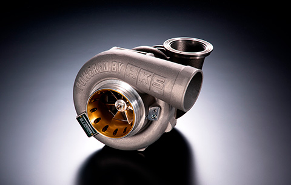
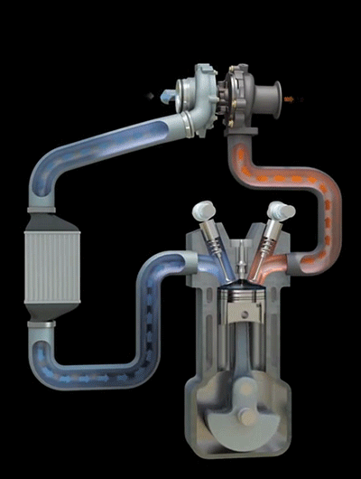
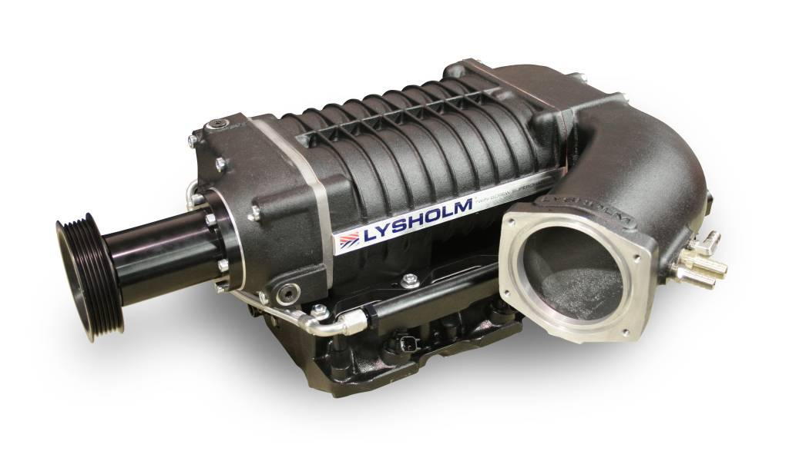
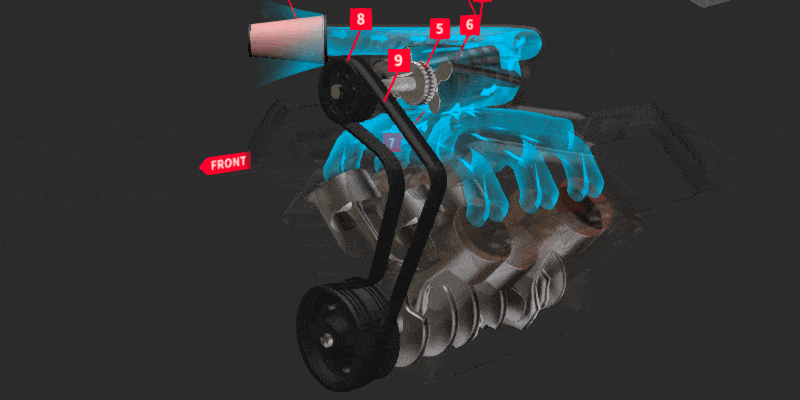
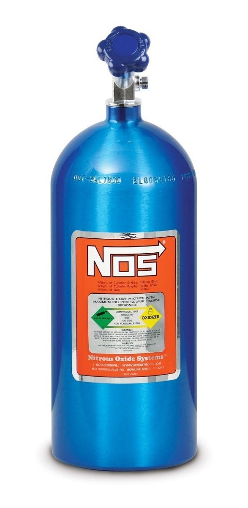

Os Motores Sobrealimentados são basicamente motores que tem uma admissão de ar forçada. Exceto o nitro. Existem três tipos de Sobrealimentação, o Turbo, o Supercharger e o Nitro
Como o Turbo funciona ? O turbo usa os gases do escape do motor para girar o rotor da turbina, quando o rotor da turbina é girado ele faz com que a turbina adimita e comprima o ar, a turbina manda esse ar comprimido para o motor forçando a admissão, com o ar sendo forçado para dentro do motor ele acaba tendo mais torque e mais potência.
Obs: Exemplo do funcionamento de um motor turbo:
 O funcionamento de um motor com Supercharger segue a mesma linha do funcionamento de um motor turbo, exceto pelo fato de que o Supercharger usa uma correia ligada ao motor do carro para girar seu rotor
Obs: Exemplo do funcionamento de um motor com Supercharger:
 O nitro já tem um conceito bem diferente dos outros dois, ele não gira nem nada do gênero, o nitro ou nos, a grosso modo, é um gás injetado no cilindro fazendo com que o motor tenha uma explosão mais forte gerando mais potência. Geralmente ele é usado em motores aspirados.
Obs: "Exemplo" do funcionamento do Nitro:
| Sobrealimentação | Som |
|---|---|
| Motor Wankel com turbo | |
| Motor V8 com supercharger | |
| Nitro | Não encontrei um som decente |